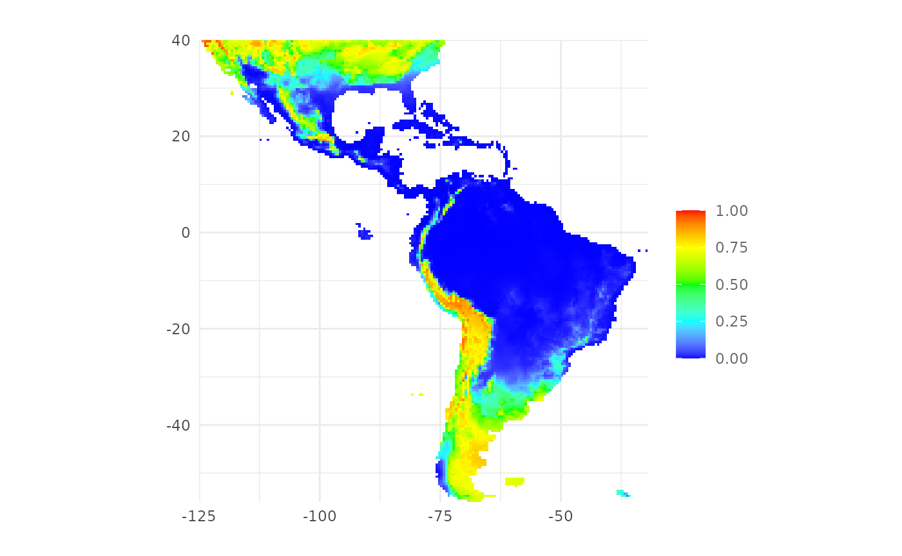
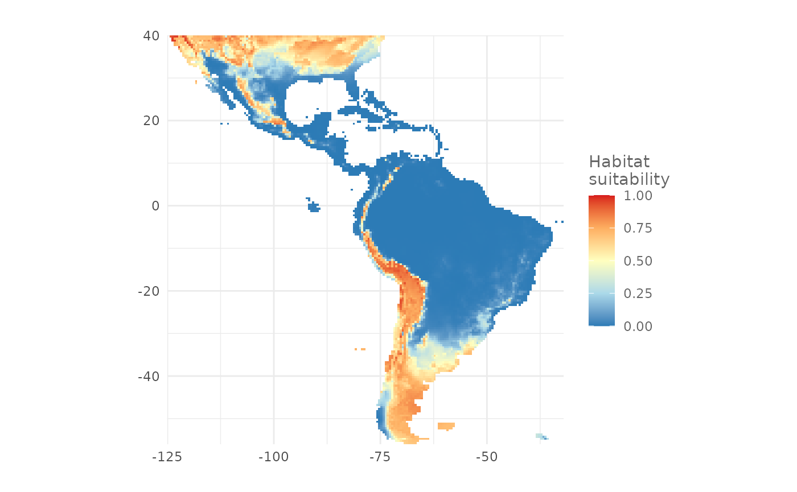
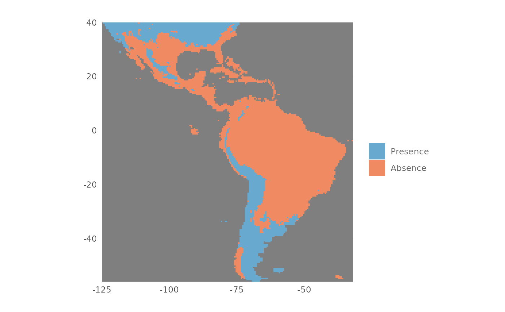

Intro
In the previous articles you have learned how to prepare the data for the analysis and how
to train a model using
SDMtune. In this article you will learn how to use a
trained model to make predictions. We will use the
default model that we trained in the previous article to
predict the distribution of the virtual species.
Make prediction
First we load the SDMtune package:
library(SDMtune)
#>
#> _____ ____ __ ___ __
#> / ___/ / __ \ / |/ // /_ __ __ ____ ___
#> \__ \ / / / // /|_/ // __// / / // __ \ / _ \
#> ___/ // /_/ // / / // /_ / /_/ // / / // __/
#> /____//_____//_/ /_/ \__/ \__,_//_/ /_/ \___/ version 1.3.2
#>
#> To cite this package in publications type: citation("SDMtune").New locations are predicted with the function predict(). The function takes three main arguments:
- a trained model given as
SDMmodel()object; - a new dataset, used to make prediction (can be a
data.frame, anSWD()object or a raster object); - the output type, that for Maxent models can be: raw, logistic or cloglog.
Next we get the prediction for our training locations using the cloglog output type:
pred <- predict(default_model,
data = data,
type = "cloglog")The output in this case is a vector containing all the predicted values for the training locations:
head(pred)
#> [1] 0.8246888 0.6886814 0.5675941 0.7317644 0.7472581 0.6938709We can get the prediction only for the presence location with:
p <- data@data[data@pa == 1, ]
pred <- predict(default_model,
data = p,
type = "cloglog")
tail(pred)
#> [1] 0.9571988 0.9222179 0.6833005 0.2801192 0.6050091 0.7394861For models trained with the Maxent method, the function performs the prediction in R without calling the MaxEnt Java software. This results in a faster computation for large datasets and might result in a slightly different output compared to the Java software.
Create a distribution map
We can use the same function to create a distribution map starting
from the predictors raster object that we created in the first
article.
map <- predict(default_model,
data = predictors,
type = "cloglog")In this case the output is a raster object:
map
#> class : SpatRaster
#> dimensions : 192, 186, 1 (nrow, ncol, nlyr)
#> resolution : 0.5, 0.5 (x, y)
#> extent : -125, -32, -56, 40 (xmin, xmax, ymin, ymax)
#> coord. ref. : +proj=longlat +ellps=WGS84 +towgs84=0,0,0,0,0,0,0 +no_defs
#> source(s) : memory
#> name : lyr1
#> min value : 2.401041e-07
#> max value : 9.665651e-01The map can be saved in a file directly when running the prediction, we just have to pass additional arguments to the predict() function. In the next example we save the map in a file called “my_file” in the GeoTIFF format:
map <- predict(default_model,
data = predictors,
type = "cloglog",
file = "my_map",
format = "GTiff")The predict() function has other arguments useful when predicting large datasets:
-
progress: can be set to
"text"to visualize a progress bar; - extent: can be passed to reduce the prediction to the given extent.
Plot a distribution map
To plot the distribution map we can use the function
plotPred():
plotPred(map)
The function plotPred() plots a map with a color ramp
similar to the one used by the MaxEnt Java software. We can pass
additional arguments to customize the map. In the next example we
provide a custom color ramp and we add a title to the legend:
plotPred(map,
lt = "Habitat\nsuitability",
colorramp = c("#2c7bb6", "#abd9e9", "#ffffbf", "#fdae61", "#d7191c"))
Plot a presence/absence map
To plot a presence/absence map we need a threshold value that splits
the prediction in presence and absence values. The function
thresholds() returns some commonly used threshold values
starting from an SDMmodel() object. In the next example we
print the threshold values for the default_model object
using the type "cloglog":
ths <- thresholds(default_model,
type = "cloglog")
ths| Threshold | Cloglog value | Fractional predicted area | Training omission rate |
|---|---|---|---|
| Minimum training presence | 0.0149851 | 0.4992 | 0.0000 |
| Equal training sensitivity and specificity | 0.5690769 | 0.2076 | 0.2075 |
| Maximum training sensitivity plus specificity | 0.3900450 | 0.2806 | 0.0775 |
For example we want to create a presence/absence map using the
threshold that maximize the training sensitivity plus specificity. We
use the function plotPA() passing the threshold value as
argument:
plotPA(map,
th = ths[3, 2])
We can also save the map in a file with the following code:
plotPA(map,
th = ths[3, 2],
filename = "my_pa_map",
format = "GTiff")Both functions plotPred() and plotPA() have
the argument hrto plot the the map with high resolution,
useful when the map is used in a scientific publication. For all the
arguments of the functions that we have used in this article please
refer to the documentation.
Conclusion
In this article you have learned:
- how to make prediction for datasets;
- how to create and save a distribution map;
- how to plot a distribution map;
- how to get thresholds values to create a presence/absence map;
- how to plot and save a presence/absence map.
In the next article you will learn how to evaluate a model.